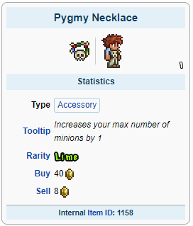
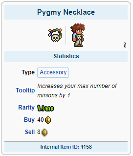

Bastões de Invocação é um tipo de arma que gera personagens secundários que ajudarão o jogador durante a batalha, atacando automaticamente os inimigos dentro do alcance. Eles não podem ser danificados ou mortos e causam danos. A maioria das armas de invocação se enquadra em uma de três categorias: Minions, Sentinelas e Chicotes. Minions são personagens móveis que seguem o jogador, enquanto sentinelas permanecem estacionárias
A classe Summoner também é caracterizada por utilizar chicotes para causar dano juntamente dos minions.
Summoners possuem a menor variedade de armas no inicio do jogo
O Imp Staff juntamente da Molten Armor e a Snapthorn possuem os melhores status:

Para acessórios é recomendado usar: Band of Regeneration, Shark Tooth Necklace, Anklet of the Wind e Frostspark Boots


Com esses equipamentos você estará pronto para derrotar qualquer chefe Pré-Hardmode!
A preparação para a luta com o Wall of Flesh:
A Imp Staff e a Bee Armor serão suas melhores escolhas:
Para acessórios a única alteração é a adição do Obsidian Shield:

Agora você está pronto para derrotar chefe do submundo e libertar poderes antigos em seu mundo!
Após derrotar o Wall of Flesh magias poderosas serão libertadas em seu mundo, novos biomas, inimigos, chefes e esquipamentos estarão disponíveis para uso.
Com tudo liberado a armadura Stardust, Stardust Dragon Staff e Morning Star serão seus equipamentos:

No Hardmode vários acessórios poderosos estarão disponíveis, entre eles:


 

Agora você está pronto para derrotar qualquer coisa que entrar em seu caminho!
Melee MageRanger.